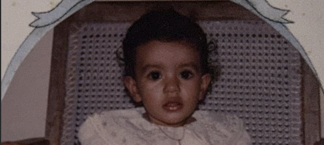

1997 · The Arrival
May 12, somewhere in Bangalore, a small Sardarni enters the world. The world wasn't ready for this chotu pattaka.

baby photo
drop here: images/timeline/1997.jpg · or · 1997.mp4
drop here: images/timeline/1997.jpg · or · 1997.mp4